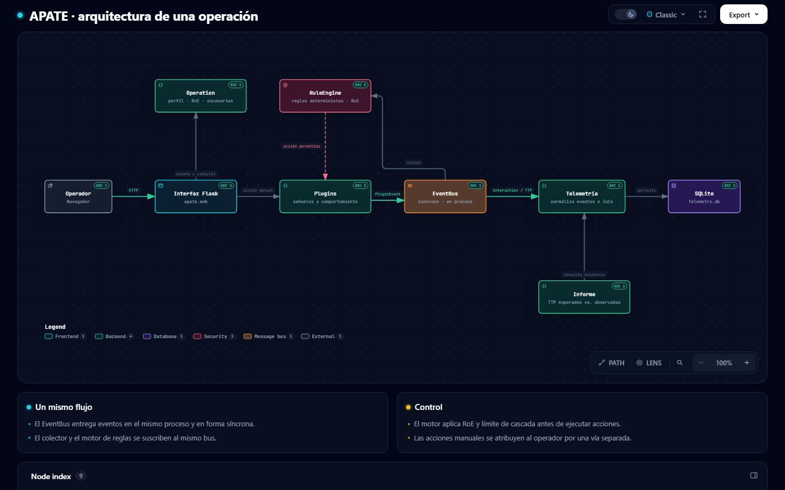

Diseñar con contexto
Uní perfil de adversario, TTP esperadas, reglas de interacción, escenarios y narrativa antes de activar capacidades.
PLANO DE CONTROL / CIBERENGAÑO
APATE conecta la hipótesis sobre el adversario con señuelos, reglas de actuación y evidencia. El diseño, la ejecución y lo observado comparten una misma operación.
Núcleo abierto · AGPL-3.0-or-later · Candidata técnica 0.1.0rc1
Perfil · Reglas de interacción · Escenarios · Narrativa
01 / QUÉ RESUELVE
APATE organiza técnicas distintas alrededor de una hipótesis operativa y deja rastro de las decisiones y los resultados.
Uní perfil de adversario, TTP esperadas, reglas de interacción, escenarios y narrativa antes de activar capacidades.
Vinculá señuelos de red y host, identidad simulada y honeytokens mediante plugins y planes confirmables.
Relacioná telemetría, IoCs y TTP observadas con la operación; compará el efecto planificado con la evidencia disponible.
02 / RECORRIDO
Un recorrido resumido del ciclo de trabajo. Las sugerencias de diseño requieren revisión del operador; las acciones automáticas pasan por reglas y restricciones explícitas.
Elegí el adversario, las TTP esperadas, los activos y las reglas de interacción.
Relacioná cada técnica con una intención de engaño, una narrativa y los plugins que la implementan.
Los eventos alimentan telemetría y reglas deterministas; las restricciones de la operación limitan las acciones derivadas.
Contrastá TTP esperadas y observadas, IoCs y efectos medidos; exportá el informe para el siguiente ciclo.
03 / ARQUITECTURA
El EventBus entrega eventos a la telemetría y al motor de reglas. La operación aporta el contexto; los plugins ejecutan las capacidades y el informe cierra el ciclo.
Diagrama del código actual, creado con Archify.

04 / PRIMER CONTACTO
Desde la raíz del repositorio de APATE, instalá el entorno de desarrollo y cargá el seed local. El ejemplo utiliza datos sintéticos.
Estado actual. Candidata técnica; las integraciones externas y la evaluación con operadores tienen validaciones pendientes.
$ python -m venv .venv
$ python -m pip install -e ".[dev]"
$ python examples/seed_demo.py
$ python -m apate.webActivá el entorno virtual antes de instalar. Luego abrí 127.0.0.1:5000/operations/.